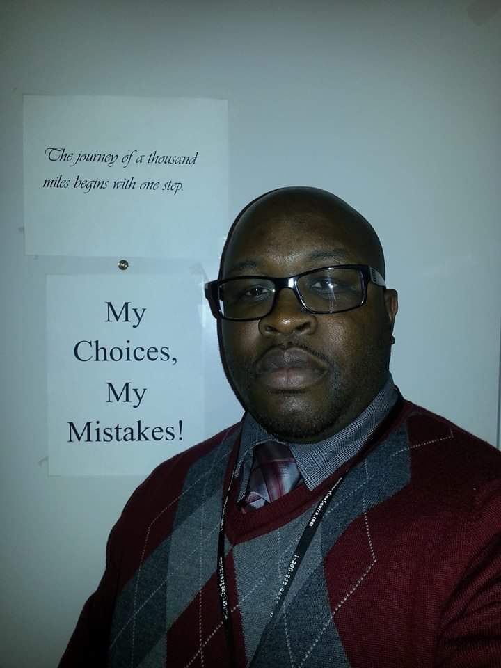
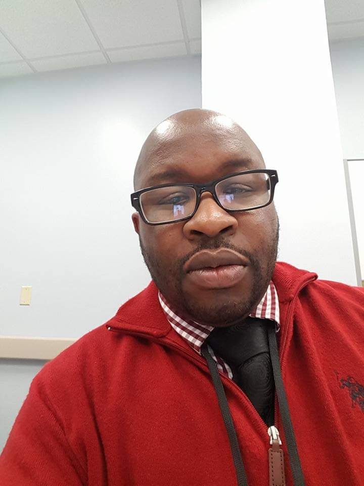
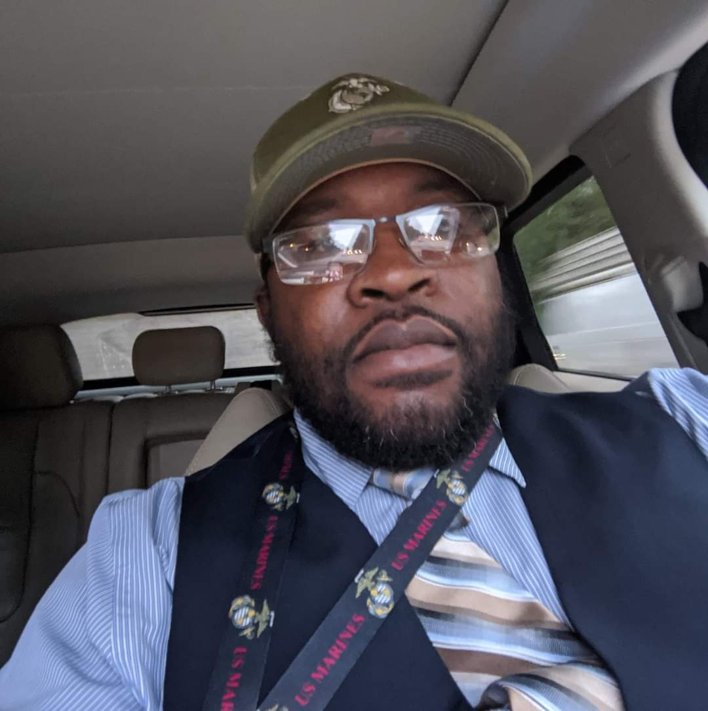
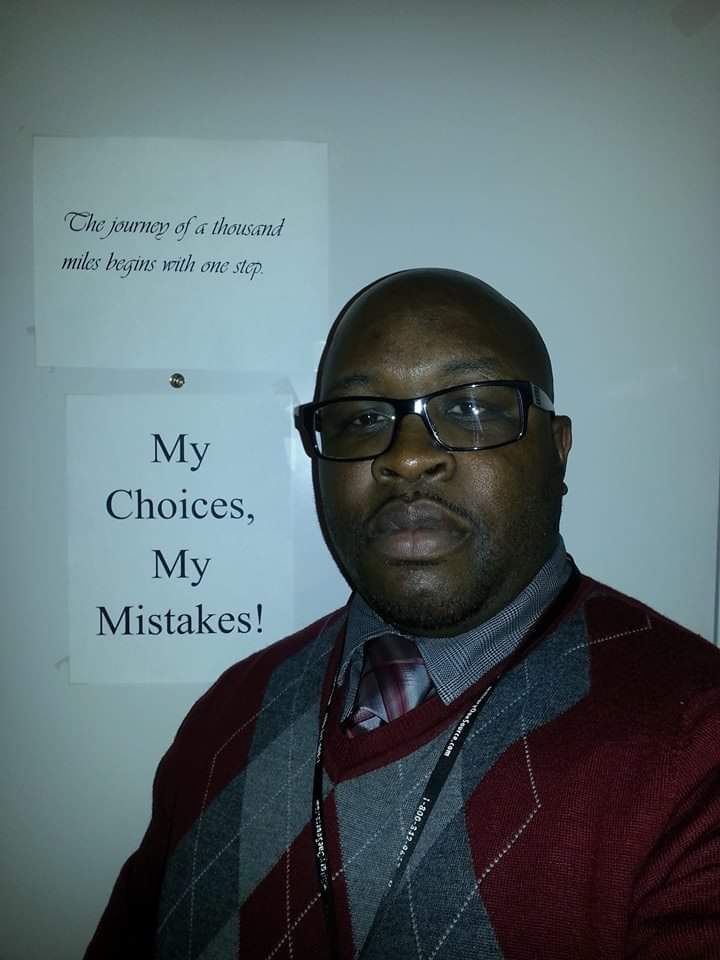
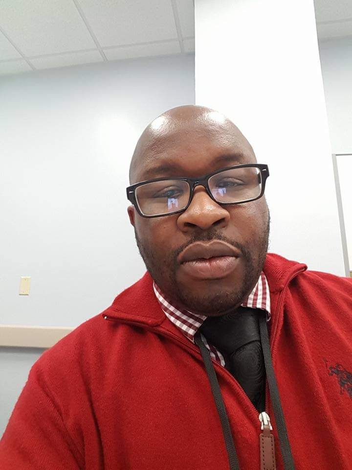
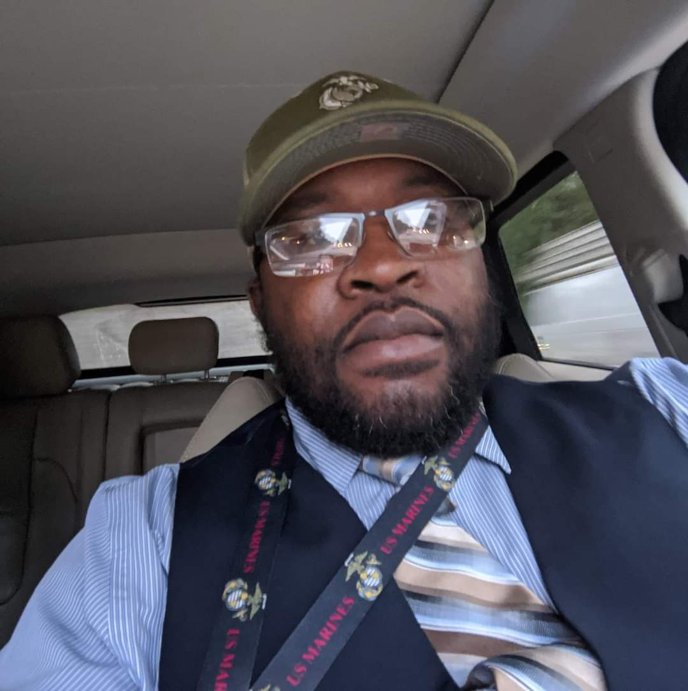
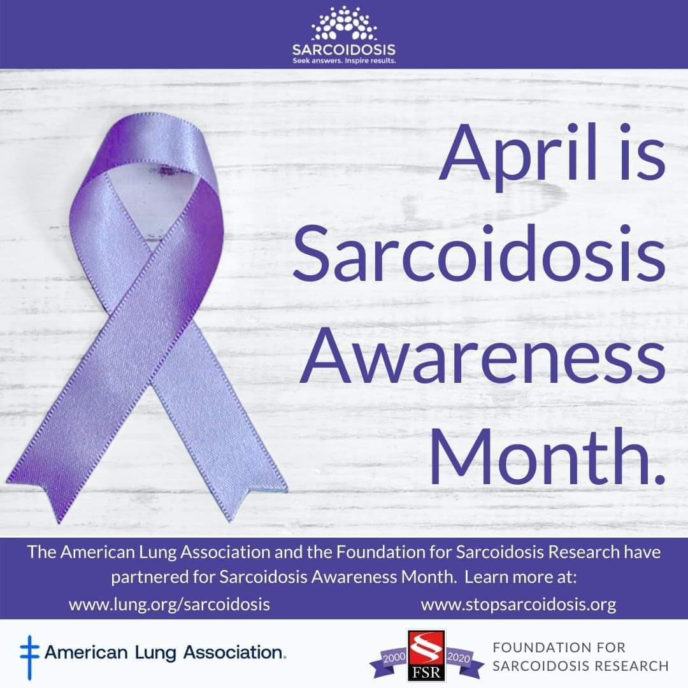
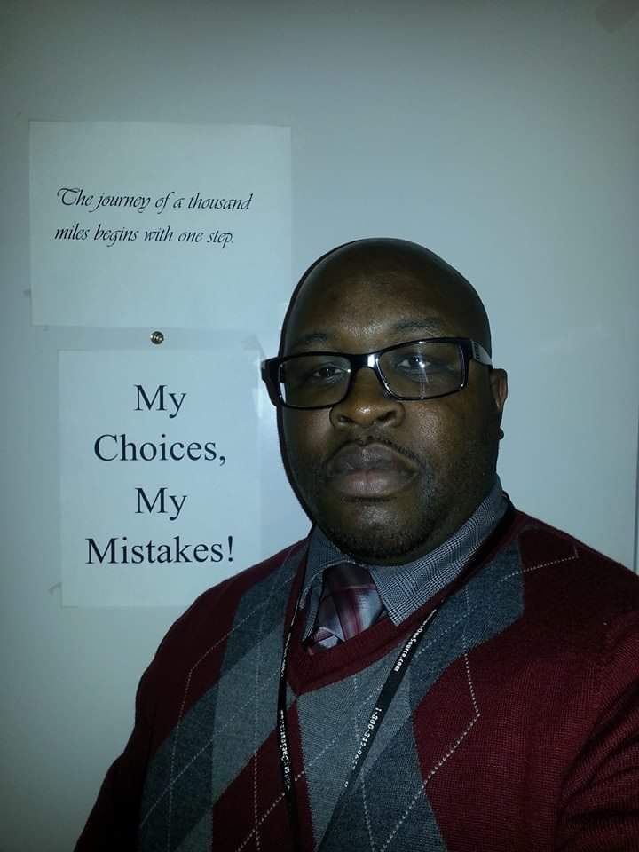
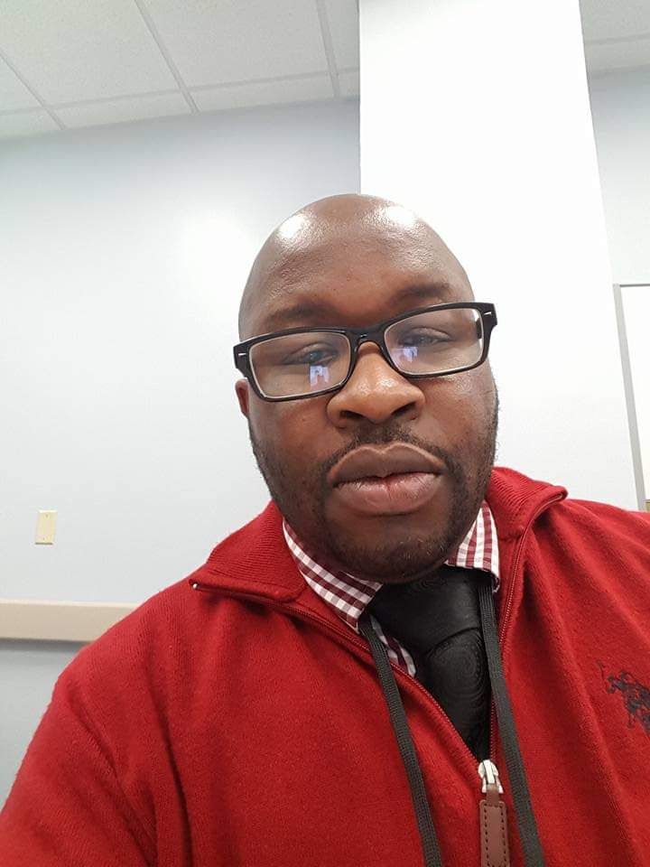
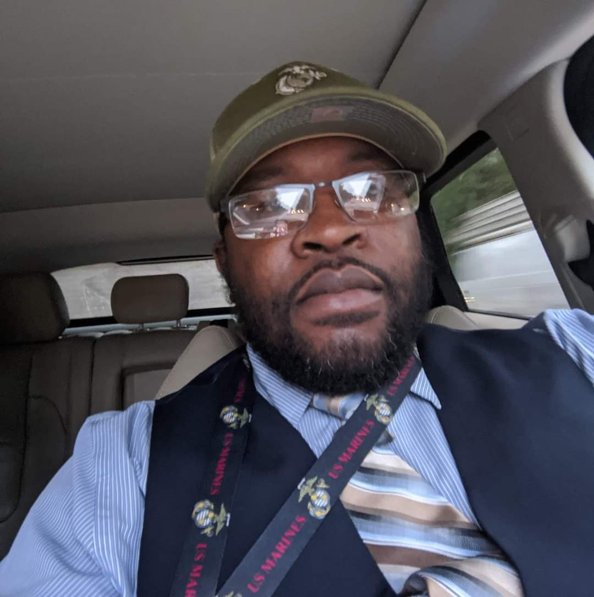

Profile
Greetings! My name is Marcies Smith. I am a United States military veteran of both the Marine Corps and Army. I enlisted for 8 years combined in both branches of service, being honorably discharged both times. I deployed and participated in numerous campaigns and deployments during my military enlistment, after which I would go on to help our nation's troubled youth as a supervisor juvenile detention officer for four years. I transitioned to the Department of Veterans Affairs in 2009 where I had the honor of servicing my fellow and our nation's veterans as a scheduler, supervisor, and lastly a Controlled Substance Coordinator.
In my current role with the Environmental Protection Agency, I serve as an Information Technology (AppSw) and also act as a Scrum Master working in Systems Research and Development. In taking the UNC-Chapel Hill Bootcamp, I hope to garner the skills needed and required to be a positive part of my team.
Gallery


